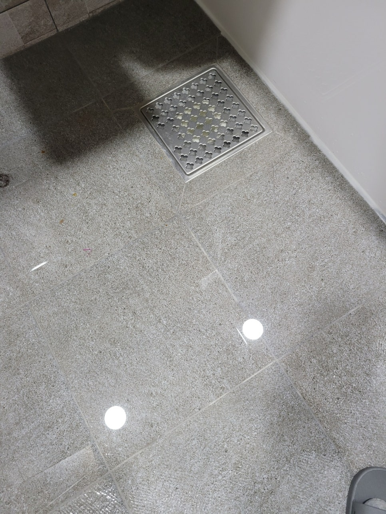
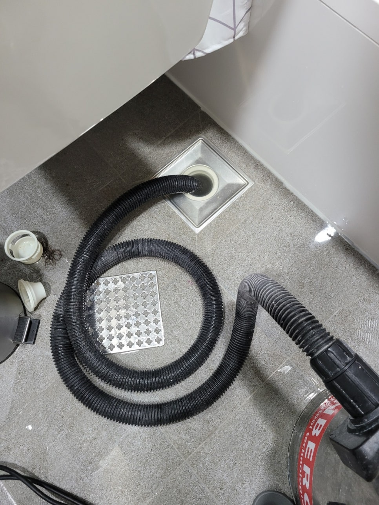
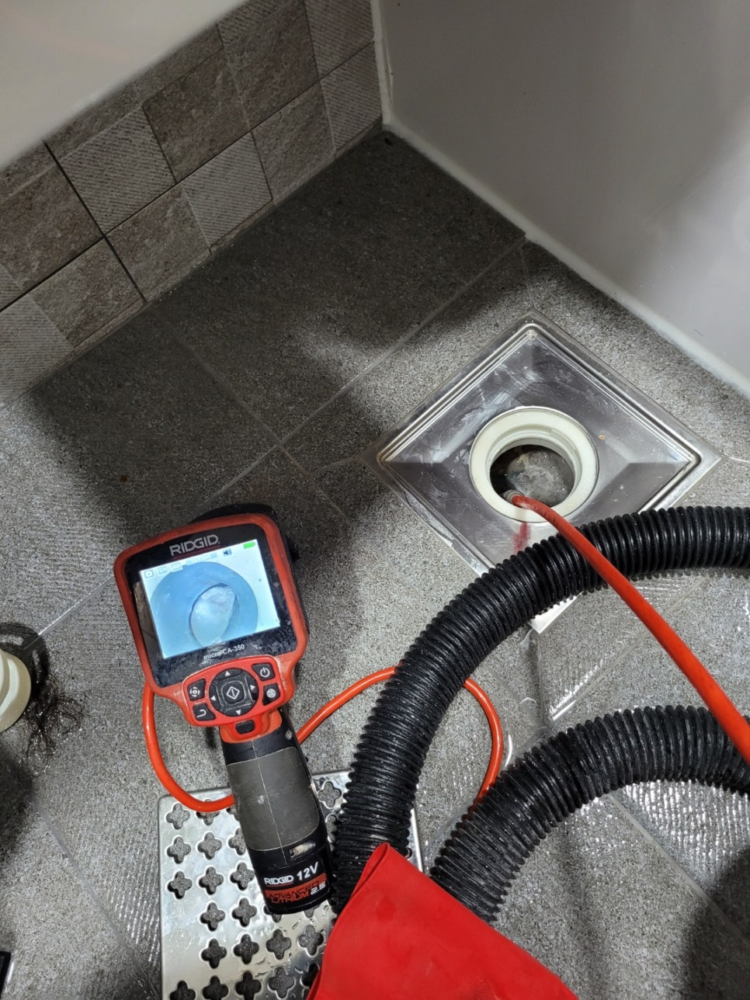
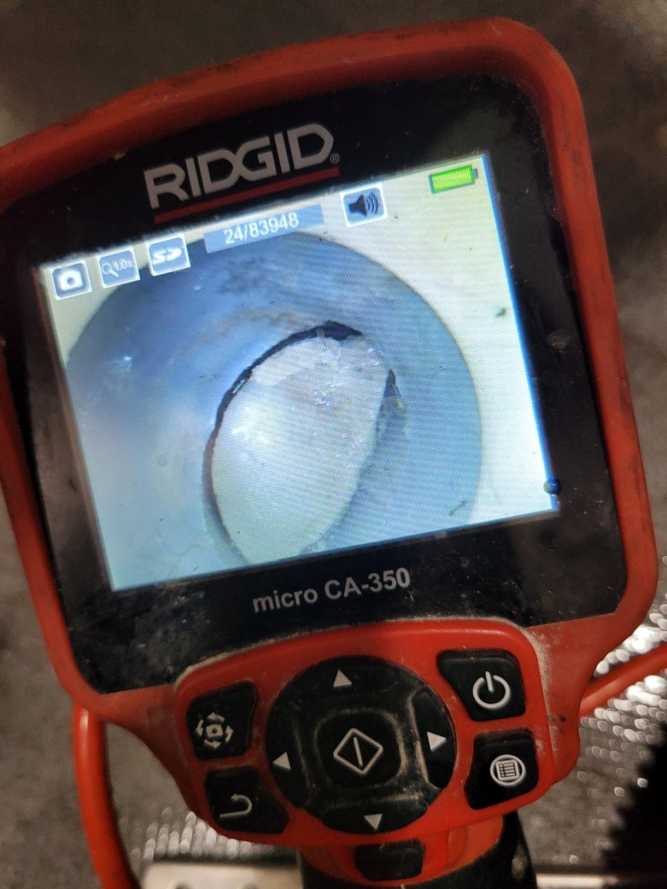
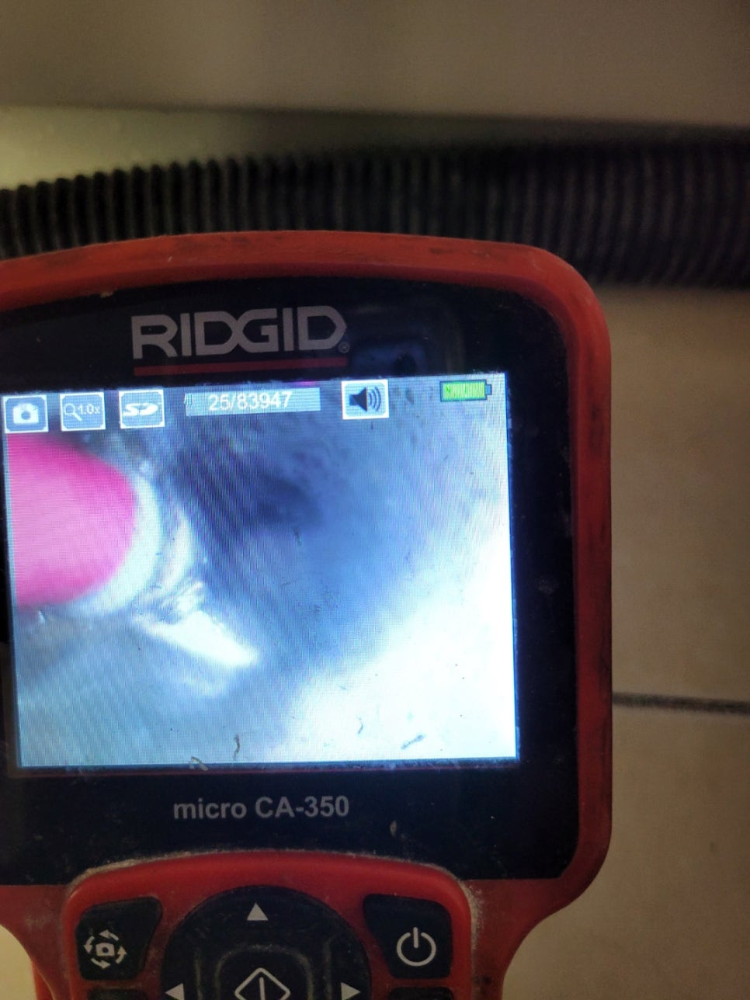
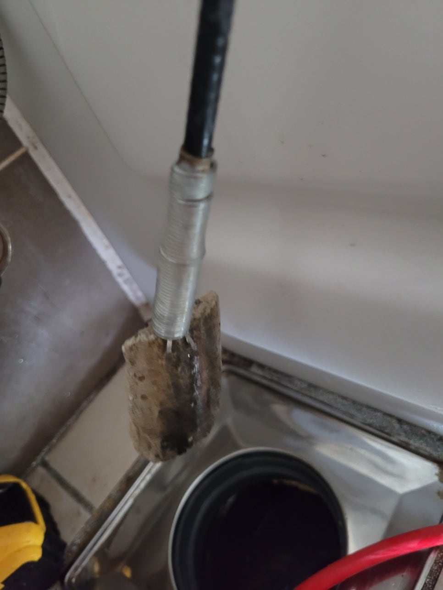

🏠 세마동하수도역류 가수동 오수맨홀청소 설비공사
서울 세마동 하수구막힘 전문 시공 후기

📋 작업 개요
- 위치: 서울 세마동, 세마동, 서울
- 서비스 유형: 하수구막힘, 배관막힘, 맨홀막힘, 역류해결, 뚫는업체, 배관청소, 설비공사
- 작업 일시: 2025. 1. 25. 18:02
- 업체명: 하수구수사대 (010-5615-2118)
🔍 문제 상황
욕실바닥역류 하수구역류 석회제거
안녕하세요
하수구수사대 입니다.
오늘은 욕실바닥역류 하수구역류 현상을
겪고 계시는 아파트현장으로
출동하였습니다.
욕실바닥역류
바닥하수구에 물을 틀어보니 물이
아주 천천히 나가고 차올라
내려가지 않고 있습니다.
세면대에서도 꿀럭꿀럭 대는 소리가
나고 고객님께서는 욕조에 물을
한가득 받아 놓으셨습니다.
이유는 뚫고나서 욕조물을 내려서
역류가 되는지 않되는지 테스트를
하기 위함입니다.
욕조에 물을받아 아이들을 목욕시키고
물을 내리면 바닥에서 물이
올라온다고 합니다.
석션작업
우선 단순하게 막혀있는지

🔎 원인 분석
💡 전문가 진단: 욕실바닥역류 하수구역류 석회제거
석션으로 흡입해 봅니다.
하지만 증상자체가
세면대,욕조,바닥유가에서 모두
증상이 있기때문에
세대내 메인관이 문제라는걸
예상은하고 있었습니다.
내시경검수
물을 빼준후 내시경 검수를 진행합니다.
초입부터 많은 양의 석회가 막고 있습니다.
석회모양이 배관 바닥에
굳어서 반달모양?처럼 되어있는데
이런경우 제거하기가 쉽지않습니다.
덩어리가 크게 떨어지다 보니 꺽인
배관으로 나오기가 쉽지않지만
내시경으로 보면서 조금씩 깨는 작업을
합니다.
석회파쇄
석회가 거의 돌처럼 딱딱하게 굳어
장비가 과부하가 걸리네요 ㅜㅜ
이건 석회라기 보기보다는
거의 시멘트에 가깝습니다.

🔧 작업 과정
아마도 처음공사당시 시멘트 물을
헹구어 버린거 같습니다.
욕실바닥역류 하수구역류
하수구수사대
서울경기인천
010-2340-2118
막혀있는 원인 발견
욕실바닥역류 하수구역류되는
곳은 처리가 되었는데 욕조,세면대
다같이 만나서 나가는 메인관에
사진처럼 꽉막혀 있습니다.
바닥에서 떨어진 시멘트석회가
샌드위치처럼 꽉막고 있네요.
1차제거
천천히 부시고 흡입하는 작업을
반복적으로 하면서 빼내는 작업을
하고 있습니다.
고객님도 내시경화면을 보시고는
이정도 일줄은 몰랐다고
하시면서 하수구수사대에게
의뢰하길 잘했다고 하시네요^^
저희도 칭찬에 더욱 힘을내어
석회시멘트를 제거해 나갑니다.
시멘트제거
어마어마하게 나왔습니다
시공때붙어 자리잡고 있던것들이
시간이 지나면서 떨어지고
겹겹이 쌓여 배수되는
물의 흐름을 방해하고 있었습니다.
배관교체를 생각할정도로 심했던
현장이네요.
공동배관인 수직관까지
깔끔하게 제거가 되었습니다.
받아놓았던 욕조물을 내려보겠다고


✅ 작업 완료
하니 고객님께서 깨끗해진
배관을 보시고는 믈 내려볼 필요도
없다고 하십니다 ㅎㅎ
그래도 받은 물은 빼야겠죠??^^
역시나 시원하게 내려갑니다.
완벽해결!!!
하수구수사대는 서울경기인천
전지역에서 활동하고 있으면
당일접수후 당일출동 가능합니다.




⚠️ 하수구 배관 막힘 예방 및 관리 가이드
- ✅ 머리카락, 비닐, 물티슈 등 물에 분해되지 않는 이물질은 하수구 유입을 절대 금지해 주세요.
- ✅ 하수구 거름망을 씌우고 모여진 이물질은 주기적으로 쓰레기통에 바로 비워주셔야 합니다.
- ✅ 배관 노후가 심할 경우 이물질이 더 쉽게 걸리므로 주기적인 배관 세척(고압세척 등)을 권장합니다.
- ✅ 작업 후 1년 이내 재발 시 하수구수사대에서 무상 A/S 보증 서비스를 제공합니다.
💡 핵심 정리
- 확실한 장비 작업(내시경 점검 및 샤프트 스케일링)으로 원인을 뿌리 뽑습니다.
- 작업 후 1년 이내에 동일한 부위 재발 시 100% 무상 A/S 서비스를 보장합니다.
- 서울 · 경기 · 인천 전 지역에 24시간 언제든 긴급 출동할 수 있도록 항시 대기 중입니다.
❓ 자주 묻는 질문 (FAQ)
🚨 서울 세마동 하수구막힘 문제로 고민이신가요?
정확한 원인 진단과 확실한 시공으로 재발 없는 해결을 약속드립니다.
24시간 긴급 출동 | 서울 · 경기 · 인천 전지역 | 1년 내 재발 시 무상 A/S